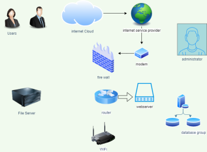
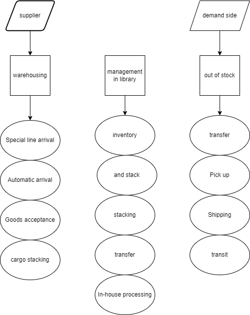

Article By: Jason
IT Project
Project Description
Warehouse information management system
It is mainly used to solve the following problems: 1. Collecting input instead of manual input reduces the error rate; 2. Enables product information to be quickly entered into the database; 3. Reduces the waste of raw materials and the loss of finished products; 4. Helps enterprises to Production and sales are integrated.
The warehouse information management system standardizes the warehouse operation process, making the warehouse information management system more institutionalized and process-oriented. Clarify the job responsibilities of each employee. Through the collection and monitoring of warehouse information, the synchronous management of goods, personnel, and warehouses is realized, and management to posts and responsibilities to people are truly realized. It also collects, counts and analyzes various data in the warehouse, so that managers can keep abreast of the warehouse status at any time, which has become the data basis for managers to make major decisions.

| Equipment |
Brand |
| computer |
Apple |
| router |
TP-LINK |
| database |
MySQL |
